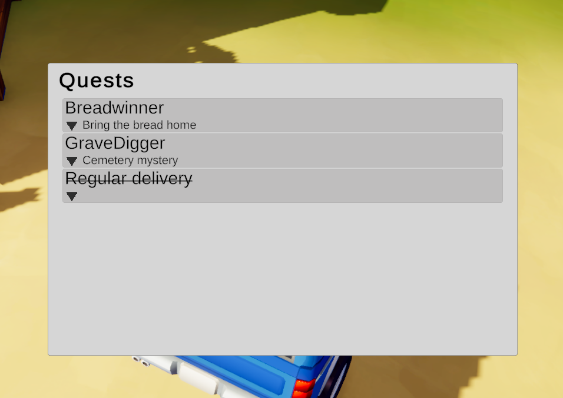
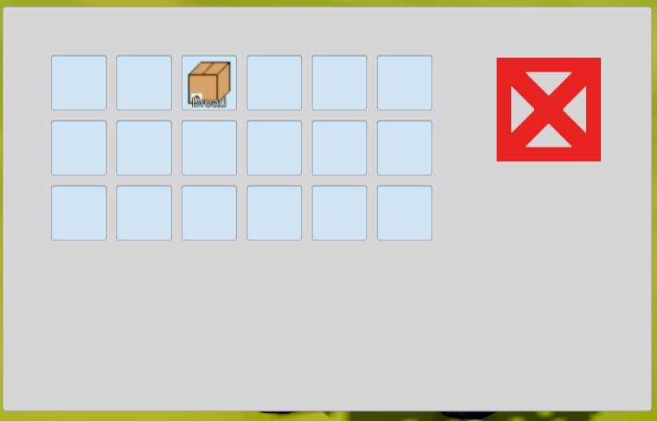
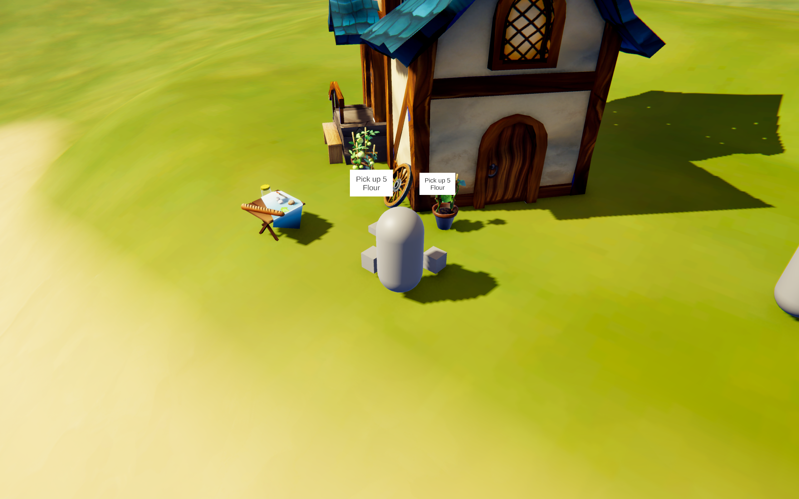
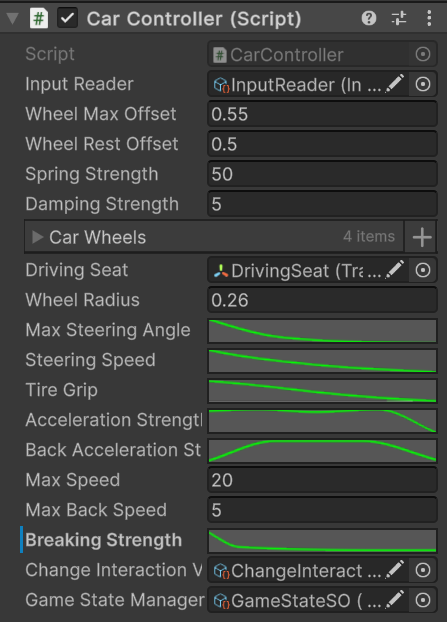
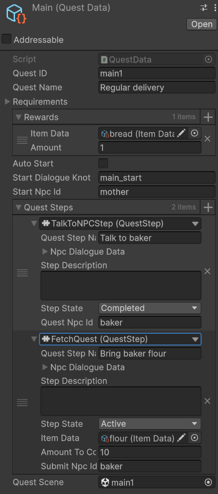

Tech demo: Short Trip
C#, Unity URP, Tech Demo
Tech demo for modular Quest/Inventory Manager using the Event Channel Architecture and
Scriptable Objects and my own vehicle control system for customizable stylized handling.
My primary motivation for this project was to build complex game systems from the ground up, to help me understand the architectural backbone of most games and how the plug-in systems available from third parties work under the hood. This led me to create a small technical playground for my systems. I knew I wanted to focus on clean architecture from the start, even without prior experience building similar complex systems. The only related experience I had was building the effect system for "The King of Blackjack." I used the insights from that project to focus on the strong parts of Scriptable Objects, build these systems slowly with focus on proper architecture above all else.
My primary motivation for this project was to build complex game systems from the ground up, to help me understand the architectural backbone of most games and how the plug-in systems available from third parties work under the hood. This led me to create a small technical playground for my systems. I knew I wanted to focus on clean architecture from the start, even without prior experience building similar complex systems. The only related experience I had was building the effect system for "The King of Blackjack." I used the insights from that project to focus on the strong parts of Scriptable Objects, build these systems slowly with focus on proper architecture above all else.
Start of quest dialogue
Car controller and dialogue during waiting to fullfil quest step

Quest log

Inventory of the player with discard for non quest items

Interaction system allows to loop through multiple interactions

Editor facing part of car controller with customization using Unity's animation curve

Editor facing part of quest scriptable object for quest creation